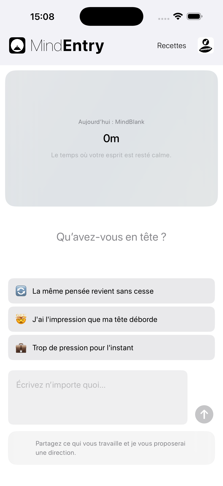
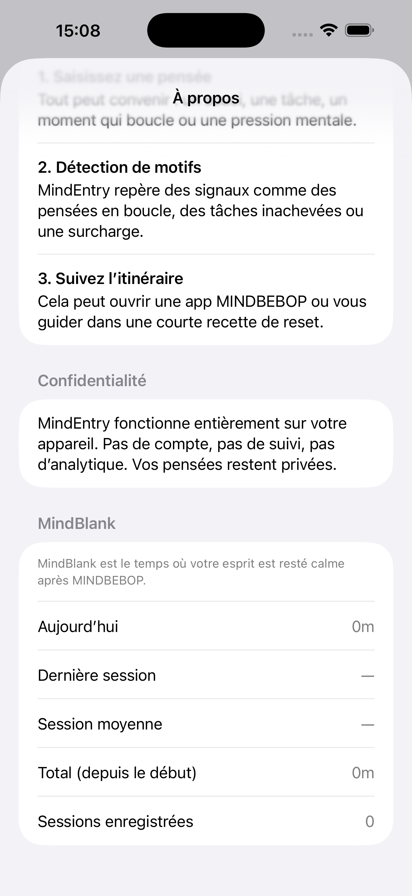

Le temps pendant lequel votre esprit est resté calme.
MindBlank n’est pas un score.
C’est un signal discret du temps que vous avez passé loin des boucles mentales non résolues après avoir utilisé MINDBEBOP.
Au lieu de mesurer combien de temps vous utilisez les apps, MINDBEBOP reflète combien de temps vous n’en avez plus eu besoin.
MINDBEBOP introduit une architecture modulaire pour structurer l’activité mentale de fond et vous aider à récupérer l’attention discrètement mobilisée par des pensées non résolues.
La plupart des apps mesurent l’engagement. MindBlank mesure l’absence.
Cet intervalle de calme, c’est MindBlank.
Un reflet passif du calme mental.
MindBlank ne nécessite aucun questionnaire, aucune note, ni auto-évaluation.
Lorsque vous utilisez une application MINDBEBOP puis n’y revenez pas pendant un certain temps, cet intervalle est enregistré comme le temps durant lequel votre esprit est resté tranquille.
Aucune question. Aucun jugement. Aucune interprétation.
Vous utilisez MindFlipOut pour répondre à une pensée qui tourne en boucle.
Vous ne rouvrez pas MindEntry ni une autre application MINDBEBOP pendant 2 heures.
MindBlank a enregistré : 2 heures loin de la boucle mentale
Le silence ne signifie pas toujours qu’une chose est résolue. Parfois, les pensées reviennent plus tard, lorsqu’elles sont prêtes.
MindBlank reflète simplement un intervalle de calme — une période pendant laquelle les boucles non résolues ne réclamaient pas votre attention.
MindBlank est intégré à MindEntry, le point d’entrée du Mental Background OS de MINDBEBOP.
Avec le temps, il pourra également apparaître dans MindEntryBiz comme indicateur organisationnel agrégé.


MindBlank s’affiche dans MindEntry.
MindBlank ne mesure pas la performance. Il permet de remarquer quand votre esprit n’a plus besoin de revenir à la boucle.
Copyright © 2026 MINDBEBOP — All rights reserved.